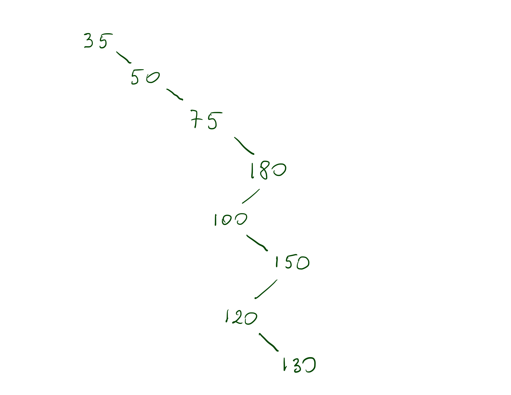
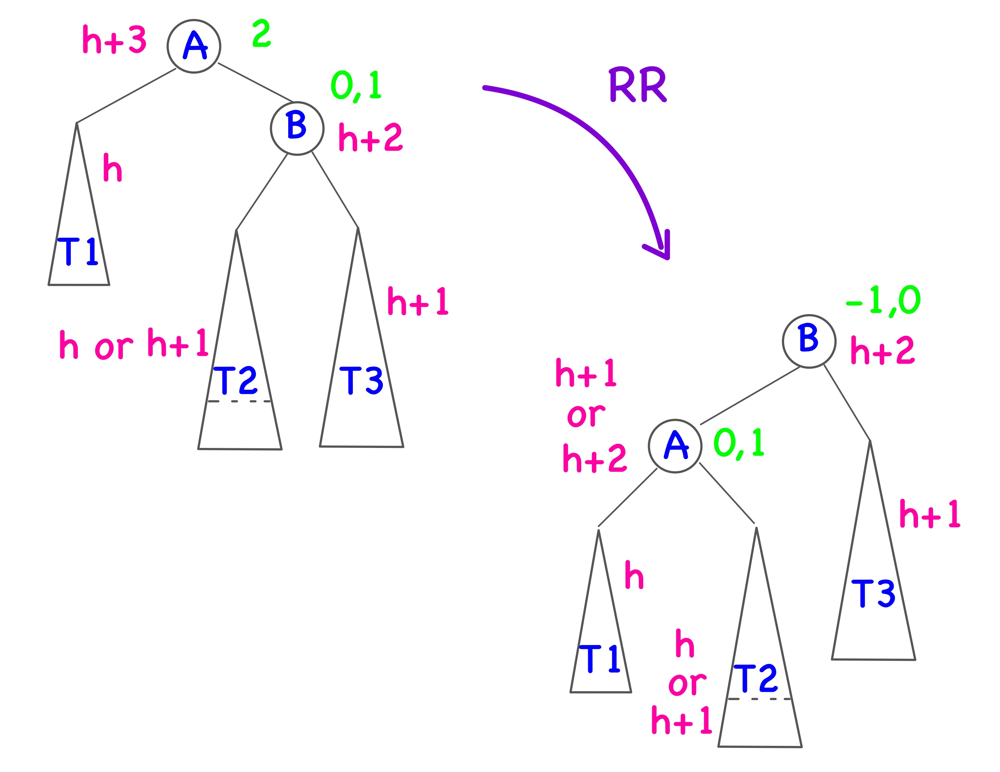
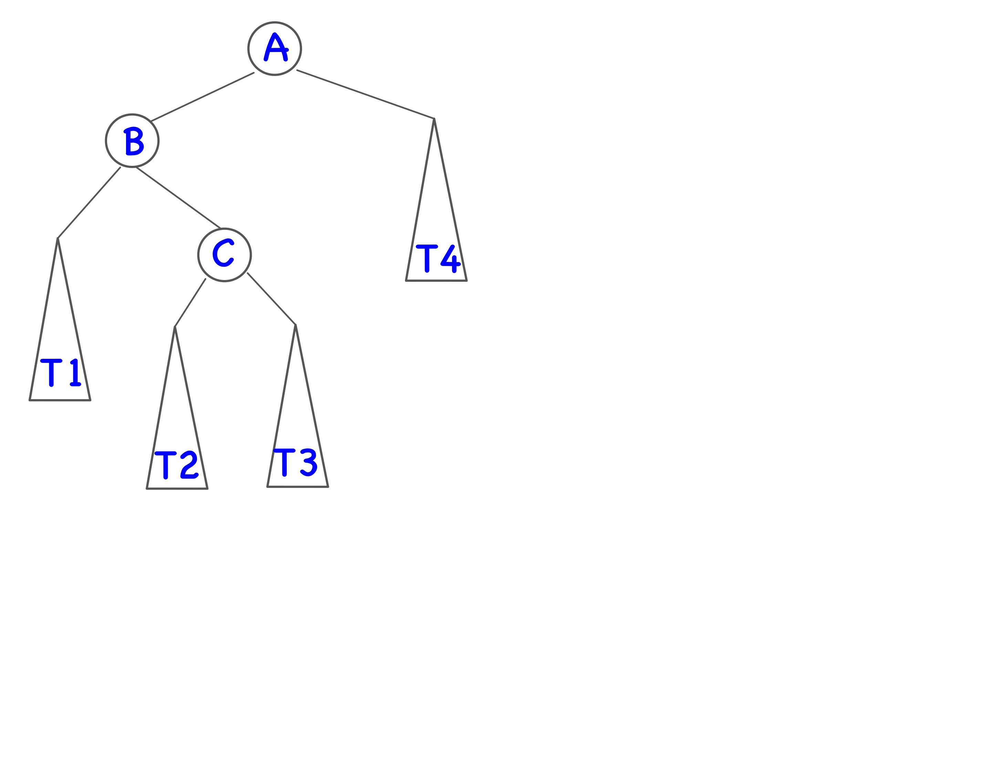
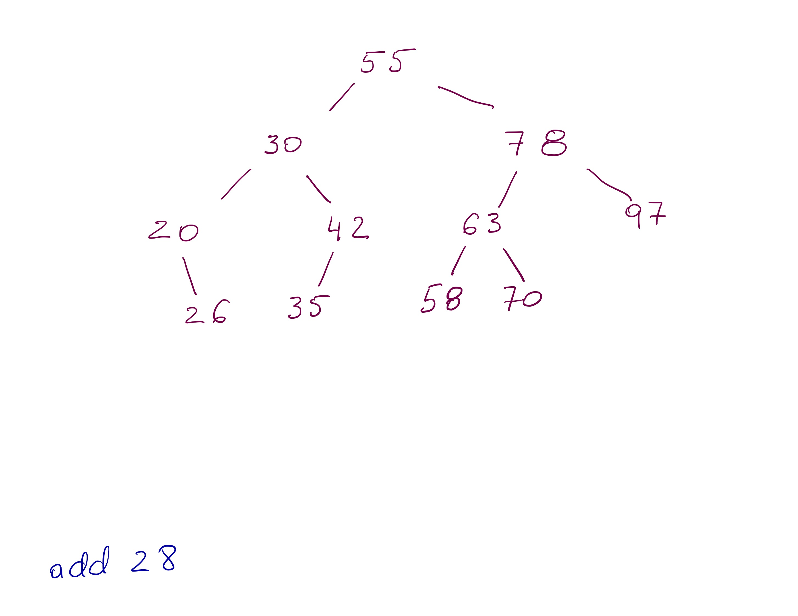
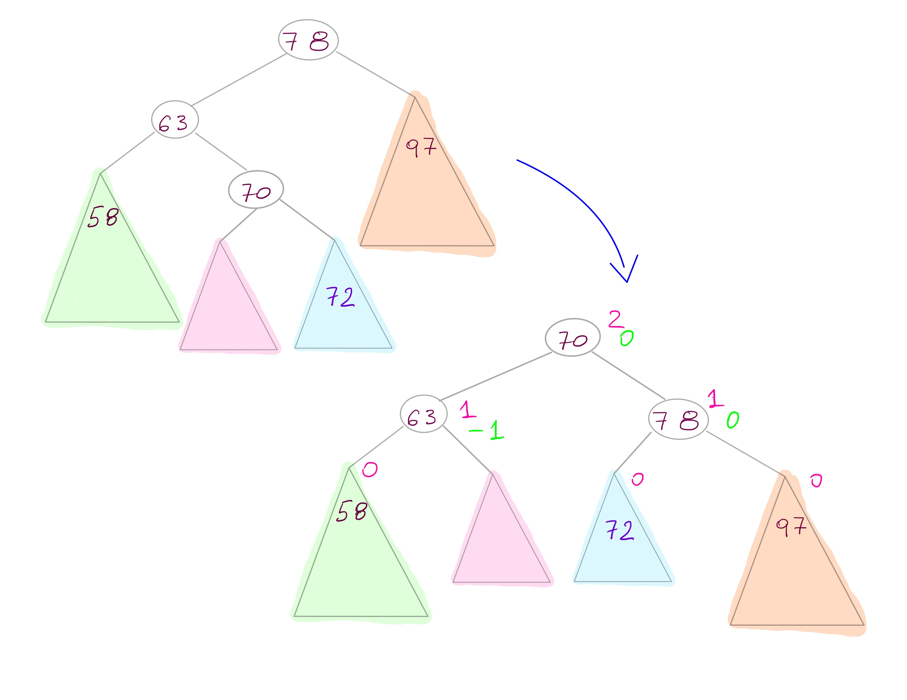

class: center, middle, title-slide # CSCI-UA 102 ## Data Structures <br> ## Balanced BST .author[ Instructor: Joanna Klukowska <br><br><br> ] .license[ Copyright 2020 Joanna Klukowska. Unless noted otherwise all content is released under a <br> [Creative Commons Attribution-ShareAlike 4.0 International License](https://creativecommons.org/licenses/by-sa/4.0/).<br> Background image by Stewart Weiss<br>] --- layout:true template: default name: section class: inverse, middle, center --- layout:true template: default name: breakout class: breakout, middle --- layout:true template:default name:slide class: slide .bottom-left[© Joanna Klukowska. CC-BY-SA.] --- template: section # BST Performance --- template: slide ## What is the Performance for a BST - traversing a tree (pre-, post-, in-order traversals) -- __ O(N)__ -- - determining the size of a tree (assume it is done efficiently) -- __ O(1)__ -- - finding a value in a tree -- __ O(logN)__ -- __(best case), O(N) (worst case for degenerate tree)__ -- - adding a value to a tree -- __ O(logN) (best case), O(N) (worst case for degenerate tree)__ -- - removing a value from a tree -- __ O(logN) (best case), O(N) (worst case for degenerate tree)__ -- ---- .center80[.important[ __In order to have a performance of finding, adding and removing to be always O(logN), we need to keep the tree balanced.__ ]] .left-column2[.center[  unbalanced tree ]] .right-column2[.center[ <img width="300px" alt="BST - balanced" src="img/11/bst-42.jpg"> more balanced tree ]] --- template: section # Self-balancing Binary Search Trees --- ## Self-balancing BSTs How do we recognize a _balanced_ tree? When does a balanced tree become unbalanced? -- - the answer to this question depends on the type of tree we are working with - different types of trees come with their own definitions of _balance_ and different tolerance as to when the tree becomes _unbalanced_ -- There are different types of self-balancing trees, for example __AVL trees__ and __red-black trees__. -- Here are the two balanced trees that result from a sequence of inserting values 1, 2, 3, 4, 5, 6, 7, 8, 9, 10 (in that order) into an initially empty tree. .left-column2[.center[ Red-black tree ]] .right-column2[.center[ AVL tree ]] --- template: section # AVL Trees --- ## AVL Trees - The __AVL tree__ (named after its inventors _Adelson-Velskii_ and _Landis_) is the original self-balancing binary search tree. -- - __The computational time of finding, adding and removing (even with re-balancing) remains O(log N).__ -- - The balancing is done based on height: __the heights of the two subtrees of any given node cannot differ by more than 1__. -- - This does not mean that the tree is complete, but it is close enough to complete that the performance of insertions and removals stays even in the worst case at O(log N), not O(N) as was the case with the ordinary BST. -- - This is achievable by applying one or two (relatively) simple rotations at the nodes that become unbalanced. -- ---- - Simulate how and AVL tree works by going to this website: [AVL Tree Visualization](http://www.cs.usfca.edu/~galles/visualization/AVLtree.html) - first adding values 1, 2, 3, 4, 5, 6, 7, 8, 9, 10 (in that order) - then removing 2, 3 and 9 --- ## Height of a Tree __Reminder:__ - The height of any node is calculated from the bottom of the tree up. - The leaves are all at height 0 (or 1 according to some definitions). - The height of any non-leaf node is the maximum of the heights of its children + 1. - The height of a tree is equal to the height of its root. --- name: check-avl ## Is this tree an AVL tree? In an AVL tree the heights of the two subtrees of any given node cannot differ by more than 1. --- template: check-avl .left-column2-large[ ] --- template: check-avl .left-column2-large[ ] --- template: check-avl .left-column2-large[ ] -- <br><br> __Questions__ - how do we know the height of any given subtree? -- - how do we keep track of heights of nodes as the tree is changing (nodes are added/removed)? --- ## Calculate vs. Store the Height Info If we try __to calculate the height of a given node__ whenever that information is needed, we need to visit all its descendants. For example, ``` int getHeight ( Node node ) if node == null return 0 return 1 + max ( getHeight(node.left), getHeight(node.right) ) ``` -- This calculation is O(K) in which K is the number of descendants of the node. -- ---- An alternative approach is __to store the height of each node in the node itself__: .left-column2-small[ ``` class AVLNode { T data ; int height; AVLNode left; AVLNode right; } ``` ] -- .right-column2-large[ ``` updateHeight ( AVLNode node ) if node is a leaf node.height = 0 else if node.left == null node.height = node.right.height + 1 else if node.right == null node.height = node.left.height + 1 else node.height = 1 + max( node.left.height, node.right.height ) ``` ] -- This calculation is O(1) assuming that the heights of the two children nodes are accurate. --- name: balance-factor ## Balance Factor In order to keep the tree balanced, we need to make adjustments when they become necessary. This is decided based on the height difference of the subtrees of a given node. The difference and its sign determine what needs to happen to the tree in order to restore its balance. The __balance factor__ is the difference between the heights of the left and right subtrees. -- .right-column2-large[.right[ ]] -- .left-column2-small[ ``` int balanceFactor ( AVLNode n ) if ( n.right == null ) return -node.height if ( n.left == null ) return node.height return node.right.height - node.left.height; ``` ] -- .left-column2-small[ <br><br> __The balance factor of a node should be -1, 0 or 1, otherwise, the node is unbalanced.__ ] --- template: balance-factor .right-column2-large[.right[ ]] -- .left-column2-small[ <br><br> Intuitively, - if the balance factor is -2, the left subtree is too deep, - if the balance factor is 2, the right subtree is too deep. ] --- template: balance-factor .important[ When we add or remove a node in an AVL tree, - we need to go back up to the root (along the path from the modified node to the root) and - update the height of each node - check one by one if any of the nodes requires re-balancing - if the call to balanceFactor returns -2 or 2, then we need to perform one of the four possible fixes described on the next slides (Notice that the call to balanceFactor should never return a value smaller than -2 or larger than 2 if the tree is maintained properly.) ] --- template: section # AVL Tree Rotations --- template: slide ## AVL Tree Rotations When a node is out of balance (i.e., its balance factor is -2 or 2), one of the four rotations can be performed to restore that balance: - LL rotation - RR rotation - LR rotation - RL rotation -- <br><br> __All rotations perform only local structural changes. They are all O(1).__ --- name: ll-rotation ## LL rotation The imbalance occurs at a node A (note that node A is not the root of the whole tree, it is just a node that is out of balance, there might be a huge tree above it): -- .center[ ] --- template: ll-rotation .center[ ] .center80[ A's __left__ subtree has two more levels that its right subtree. In the left subtree of A (i.e. subtree rooted at B) either both subtrees of B have the same height, or the __left__ subtree of B has height one larger than the right subtree. ] --- template: ll-rotation .center[ ] .center80[ The balance factor of B is either 0 or -1 => B is balanced. The balance factor of A is -2 => A is out of balance. ] --- template: ll-rotation .center[ ] .center80[ To restore the balance, we _pull B up_ and _push A down_. ] -- .center80[ This means that the T2 subtree needs to be shifted from the right subtree of B to the left subtree of A. (Note that this is possible since all the values in T2 are smaller than A and larger than B.) ] --- template: ll-rotation <br><br> The following pseudocode describes steps required to perform an LL rotation .right-column2-large[.right[ ]] .left-column2-small[ ``` //returns a reference to the new //root of the subtree after //the LL rotation has been performed AVLNode balanceLL ( AVLNode A ) AVLNode B = A.left A.left = B.right B.right = A updateHeight ( A ) updateHeight ( B ) return B ``` ] --- name: rr-rotation ## RR rotation The imbalance occurs at a node A (note that node A is not the root of the whole tree, it is just a node that is out of balance, there might be a huge tree above it). -- .center[ ] .center80[ A's __right__ subtree has two more levels that its left subtree. In the left subtree of A (i.e. subtree rooted at B) either both subtrees of B have the same height, or the __right__ subtree of B has height one larger than the left subtree. ] --- template: rr-rotation .center[  ] .center80[ To restore the balance, we _pull B up_ and _push A down_. ] -- .center80[ This means that the T2 subtree needs to be shifted from the left subtree of B to the right subtree of A. (Note that this is possible since all the values in T2 are larger than A and smaller than B.) ] --- template: rr-rotation .center[ ] .center80[ The code that performs this rotation is very similar to the one for the LL rotation. ] --- name: lr-rotation ## LR rotation The imbalance occurs at a node A (note that node A is not the root of the whole tree, it is just a node that is out of balance, there might be a huge tree above it): -- .center[  ] --- template: lr-rotation .center[ ] .center80[ A's __left__ subtree has two more levels that its right subtree. In the left subtree of A (i.e. subtree rooted at B) the __right__ subtree of B has height one larger than the left subtree. ] --- template: lr-rotation .center[ ] .center80[ The balance factor of C is either -1, 0 or 1 => C is balanced. The balance factor of B is 1 => B is balanced. The balance factor of A is -2 => A is out of balance. ] --- template: lr-rotation .center[ ] .center80[ To restore the balance, it is not enough to _pull B up_ and _push A down_! ] -- .center80[ Instead, we _pull C up_, _push A down_ and _leave B where it is_. ] --- template: lr-rotation .center[ ] .center90[.smaller[ This means that the T2 and T3 subtrees needs to be shifted: - T2 becomes the right subtree of node B (since all the values in T2 are larger than B and smaller than C) - T3 becomes the left subtree of node A (since all the values in T3 are smaller than A and larger than C) ]] --- template: lr-rotation <br> The following pseudocode describes steps required to perform an LR rotation .right-column2-large[.right[ ]] .left-column2-small[ ``` //returns a reference to the new //root of the subtree after //the LR rotation has been performed AVLNode balanceLR ( AVLNode A ) AVLNode B = A.left AVLNode C = B.right; A.left = C.right B.right = C.left C.left = B C.right = A updateHeight ( A ) updateHeight ( B ) updateHeight ( C ) return C ``` ] --- name: rl-rotation ## RL rotation The imbalance occurs at a node A (note that node A is not the root of the whole tree, it is just a node that is out of balance, there might be a huge tree above it). -- .center[ ] .center80[ A's __right__ subtree has two more levels that its right subtree. In the right subtree of A (i.e. subtree rooted at B) the __left__ subtree of B has height one larger than the right subtree. ] --- template: rl-rotation .center[ ] .center90[.smaller[ To restore the balance, we _pull C up_, _push A down_ and _leave B where it is_. ]] -- .center90[.smaller[ This means that the T2 and T3 subtrees needs to be shifted: - T3 becomes the right subtree of node A (since all the values in T3 are larger than A and smaller than C) - T2 becomes the left subtree of node B (since all the values in T2 are smaller than B and larger than C) ]] --- template: section # Examples --- name: addRR ## Adding a Value --- template: addRR .center[  ] --- template: addRR .center[ ] --- template: addRR .center[ ] --- template: addRR .center[ <img width="600px" alt="AVL-add" src="img/12/add-RR-11.jpg"> ] --- template: addRR .center[ ] --- template: addRR .center[ ] --- template: addRR .center[ ] --- template: addRR .center[ ] --- name: addLR ## Adding a Value --- template: addLR .center[ ] --- template: addLR .center[ <img width="600px" alt="AVL-add" src="img/12/add_LR-17.jpg"> ] --- template: addLR .center[ <img width="600px" alt="AVL-add" src="img/12/add_LR-18.jpg"> we need LR rotation ] --- template: addLR .center[ but what happens if we apply LL instead of LR ] --- template: addLR .center[ using LL instead of LR ] --- template: addLR .center[ after the rotation, the new root of the subtree is still out of balance ] --- template: addLR .center[ ] --- template: addLR .center[ using correct LR rotation ] --- template: addLR .center[  ] --- template: addLR .center[ <img width="600px" alt="AVL-add" src="img/12/add_LR-25.jpg"> ] --- template: addLR .center[ ] --- template: addLR .center[ ] --- template: addLR .center[ ] </optgroup>